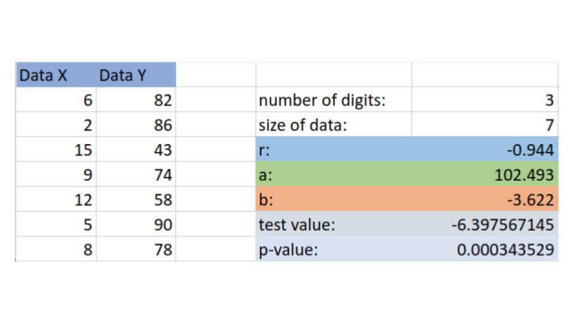
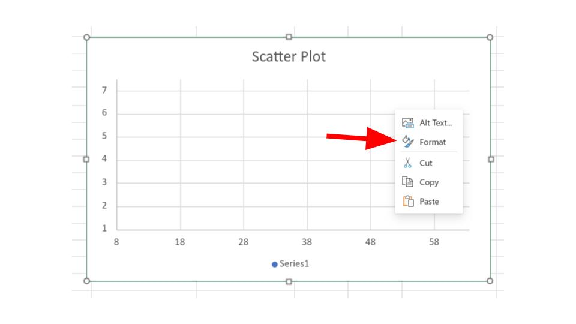
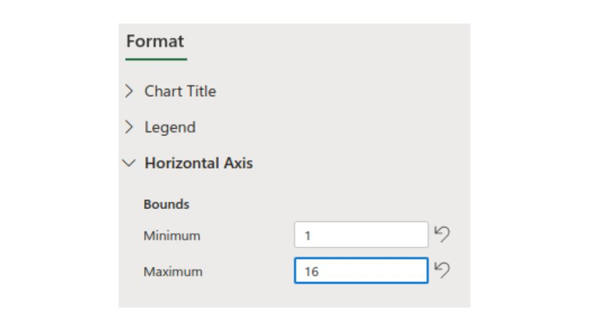
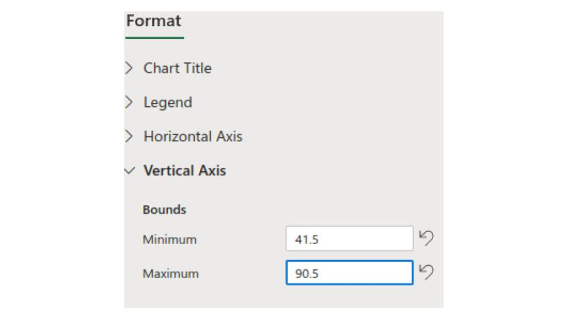
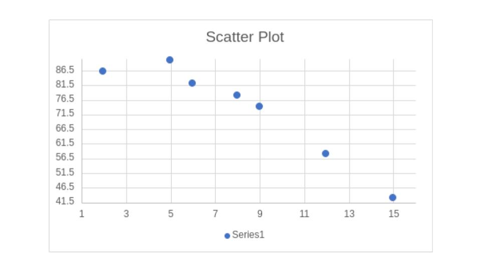

Finding
Correlation Coefficients
Example
A teacher was curious how the number of absences effected the grade of her students. To test this she first wanted to look at the correlations coefficient when comparing number of absences and final grade. The data she collected is in the following table.
| Student | Number of Absences | Final Grade (%) |
| A | 6 | 82 |
| B | 2 | 86 |
| C | 15 | 43 |
| D | 9 | 74 |
| E | 12 | 58 |
| F | 5 | 90 |
| G | 8 | 78 |
Find the correlation coefficient, and graph the scatter plot.
Step 1:
Count the number of pairs, for this example their are 7 students.
Step 2:
Enter the data into the regression calculator, the number of digits spot indicates the number of decimal places you'd like to round to, this is up to the student, while I suggest nothing less than 2.

We see from our calculator that:
\[r=-0.944\]
This score is quite close to -1 so this sample is highly correlated, of course this is just a sample, later we will see if this is sufficient evidence to suggest a strong correlation.
Step 3:
In the regression calculator you can right click the scatter plot, then select format, as shown below

Then we click the drop down menu for "Horizontal Axis" and change the Bounds. We see that the lowest value for the X data (the number of absences) is 2, so we give a little bit of room on the left for our graph by choosing 1. Next we see that the largest value for the X is 15 so we give a little bit of room on the right by choosing 16.
*This going one up is arbitrary and it will not always be one, you should look at different options and choose the one you think looks the best while still having all the data in the picture*

Now we do the same for the "Vertical Axis" again choosing a little bit of buffer room from our largest and smallest value

Then we can copy and paste this graph into programs like Microsoft Word. or we can right click and save this scatter plot as a picture if we'd like as well.
